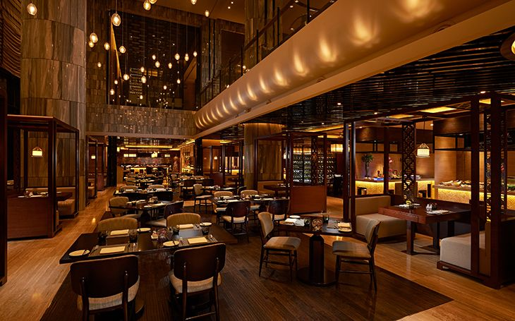
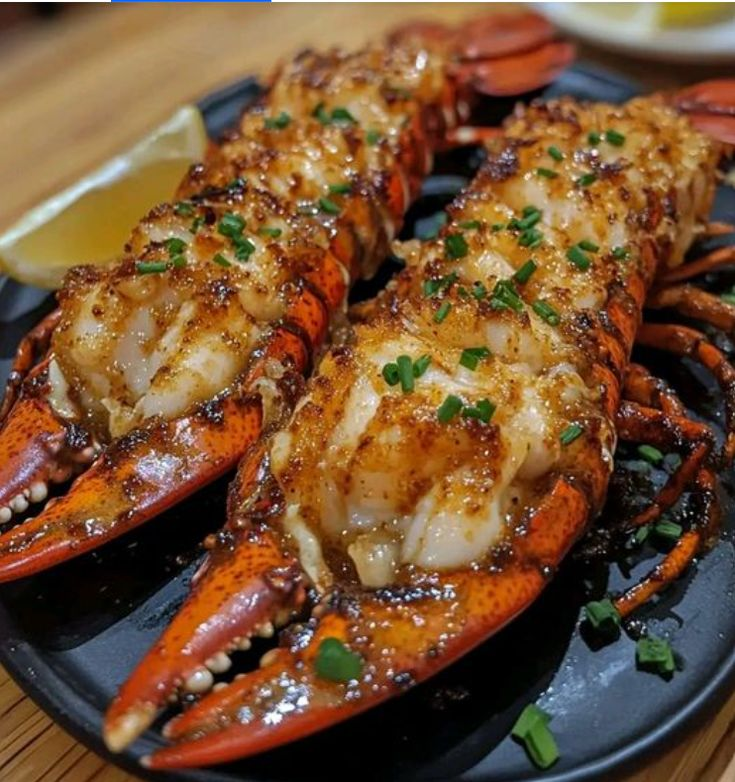
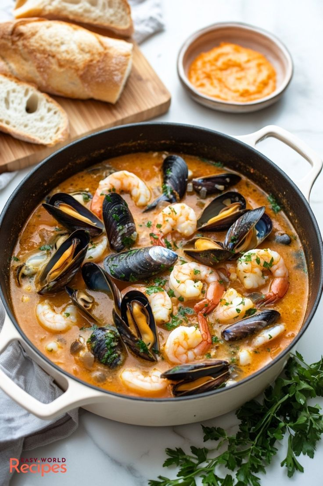

En Muelle 62 nos especializamos en ofrecer mariscos frescos preparados con el auténtico sabor del mar. Nuestro restaurante es el lugar ideal para disfrutar con familia y amigos en un ambiente agradable.


C. 62 601-X 27, Pedregales de Caucel
Cd Caucel, 97314 Mérida, Yucatán
Lunes a Domingo
9:00 AM – 11:00 PM
El horario puede cambiar en días festivos.